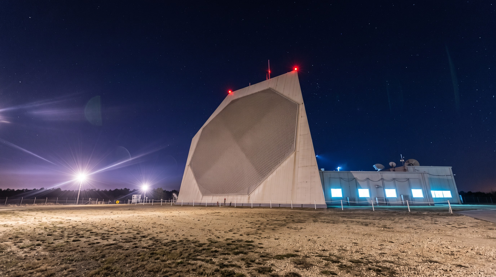
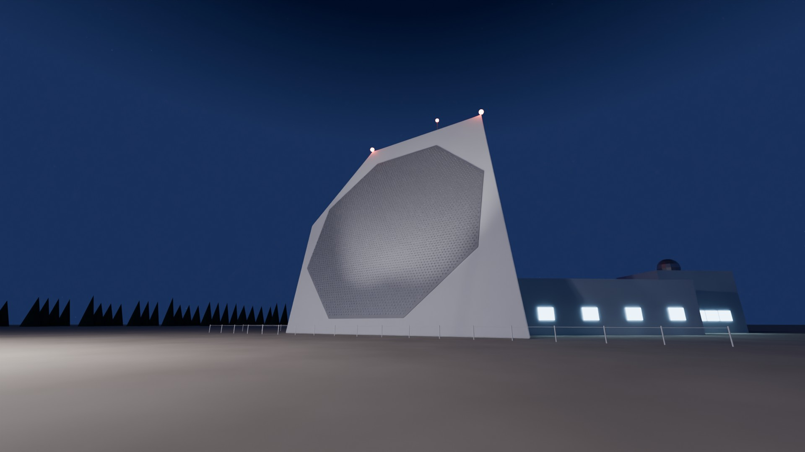
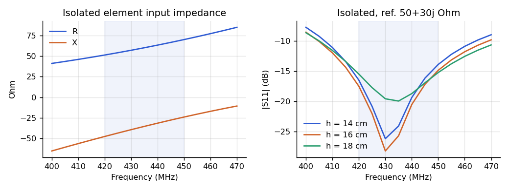
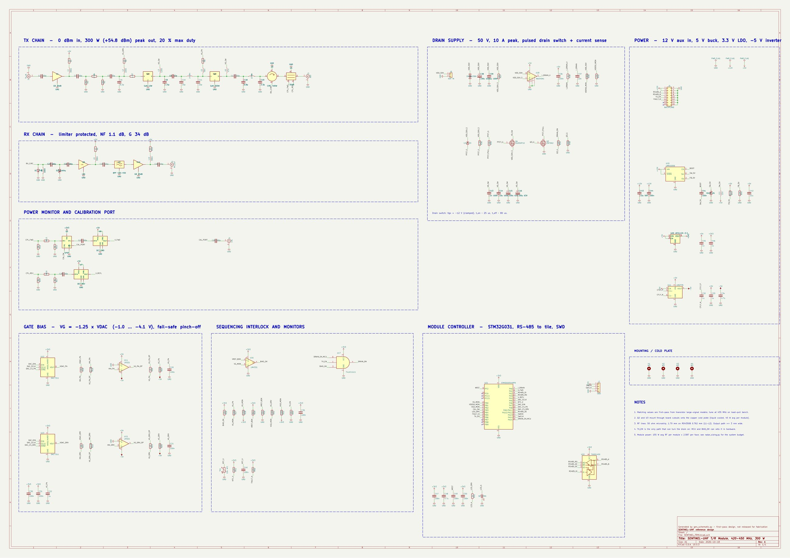
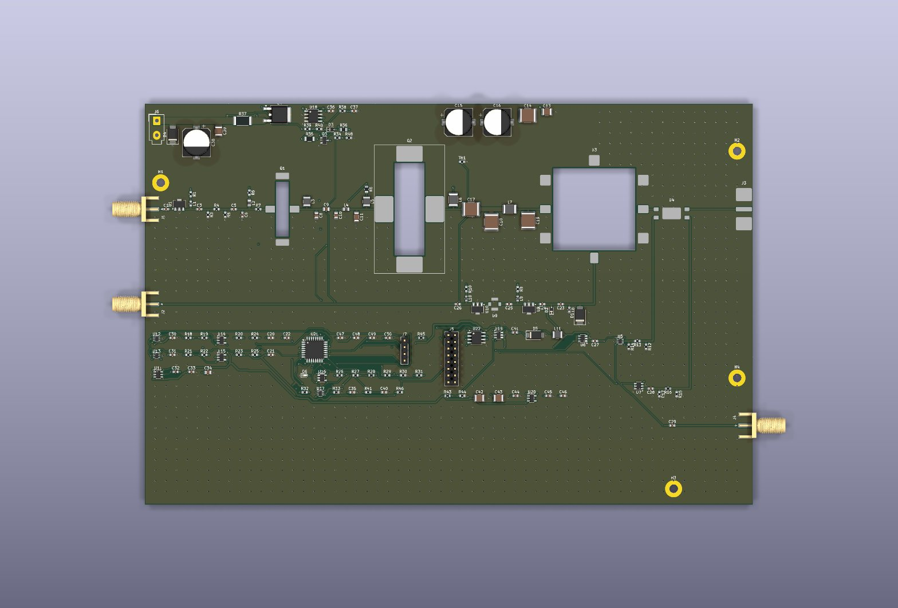
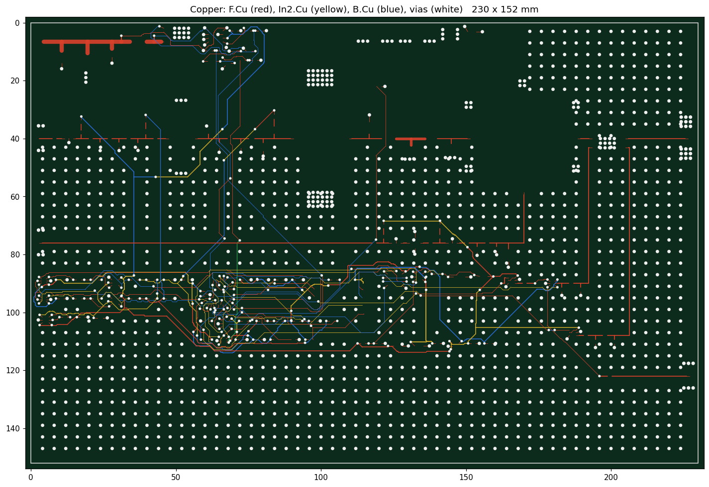

A two-face, 420–450 MHz solid-state phased-array radar in the class of PAVE PAWS / UEWR. This page covers the system sizing, the antenna element with its electromagnetic simulation, the T/R module electronics as a complete KiCad project (schematic and PCB), the digital back end, the site, and a cost estimate.


| Radio frequency | |
|---|---|
| Band | 420–450 MHz (UHF radiolocation) |
| Polarisation | |
| Peak / average RF per face | |
| Max duty cycle | 20 % |
| Waveforms | LFM, 0.25–16 ms, 0.1–10 MHz |
| Range resolution | 1.5 km search / 15 m track |
| Antenna | |
| Faces | 2 × 120° = 240° azimuth |
| Active aperture | 22 m circle per face, tilt 20° |
| Elements per face | |
| Lattice | equilateral, 0.41 m (0.595λ) |
| Gain / beamwidth (broadside) | |
| Scan | ±60° az, 3–85° el |
| Performance (SNR 15 dB, Pd 0.9, Pfa 10-6) | |
|---|---|
| Power-aperture per face | |
| Search fence (120° × 3°) | |
| Peak sidelobe (25 dB Taylor rx) | |
| Scan loss model | cosθ per pass + EM mismatch |
| Digital back end | |
| RFSoC tiles per face | |
| Element data rate | |
| After beamforming (16 beams) | |
| Facility | |
| Building | 32 m high, chamfered triangle |
| Prime power | |
| Cooling | liquid cold plates, glycol loop |
Single 16 ms pulse, both faces identical. The 30° and 60° curves include the projected-aperture loss and the element mismatch loss taken from the array simulation in section 03, so the edge-of-scan numbers are the honest ones.
Every element has its own transmit/receive module and its own ADC/DAC channel. There is no analog beamforming network: beams are formed in FPGA fabric, so one face can hold a search fence and track several targets in the same dwell.
| Mode | Pulse | Bandwidth | Range resolution | Use |
|---|---|---|---|---|
| Long-range search | 16 ms LFM | 100 kHz | 1.5 km | horizon fence, 10.8 s revisit |
| Track | 2–8 ms LFM | 1 MHz | 150 m | track update, 1–10 Hz per target |
| Discrimination | 0.25–2 ms LFM | 10 MHz | 15 m | object separation, length estimate |
| Calibration | CW / chirp | 30 MHz | — | mutual-coupling cal through module CAL port |
Each element is a pair of crossed tubular dipoles (12 mm aluminium, long) mounted above the face ground plane. The two dipoles feed a 90° hybrid in the element base, giving circular polarisation with one T/R channel per element.
The element was sized with a thin-wire method-of-moments solver written for this project (antenna/mom.py). It uses rooftop basis functions with Galerkin testing, image theory for the face ground plane, and delta-gap ports. Before use it was checked against the textbook half-wave dipole: 84 + j45 Ω and 2.16 dBi, against 2.15 dBi theory.
The array study solves a 61-element hexagonal patch, with 122 ports and 1,830 unknowns, at 420, 435 and 450 MHz. That gives the full mutual-coupling matrix. Active reflection at the centre element is computed for phased scans in the E, H and diagonal planes, and the matching-network target is chosen by minimax over band and scan.
| Simulated element (centre of 61-element patch) | |
|---|---|
| Dipole length / height | |
| Match target (x / y dipole) | |
| Embedded realised gain, broadside | |
| Ideal cell gain 4πA/λ² | |
| Axial ratio, broadside / 60° worst | |
| Nearest-neighbour coupling | |
| Active |&Gamma|, worst over band, ±60° | |
| Isolated element |S11|, 420–450 MHz | < −15 dB |
Where the element falls short. The match holds to about −9 dB out to 45° but drops to −4 dB at 60°, which costs 2.2 dB per pass at the scan edge (already folded into the detection curve). The 0.41 m lattice, the same as PAVE PAWS, puts the grating-lobe onset at about 61° at 450 MHz, so the edge of scan sits close to that limit. A trade study on a 37-element patch showed a 0.37 m lattice gains under 1 dB, which doesn't justify 30 % more modules. The better next step is a wide-angle matching sheet over the face, checked in a full-wave model that includes the balun and feed posts.

The radar is built from one module type, repeated 5,174 times across the two faces, so this is the board that matters. It is a complete KiCad 10 project. The schematic and PCB are generated by script from the circuit description, then checked by KiCad itself.
| Stage | Part class | Gain | Output |
|---|---|---|---|
| RFSoC DAC | direct RF synthesis | — | 0 dBm |
| Driver gain block | MMIC, SOT-89 | +20 dB | +20 dBm |
| Pad + match | 3 dB π pad, L-C match | −3.5 dB | +16.5 dBm |
| GaN driver | 10 W, 50 V, 440166 flange | +23 dB | +39.5 dBm (9 W) |
| GaN final | 300 W, 50 V, NI-780 flange | +16 dB | +55.5 dBm (355 W) |
| Output match, circulator, coupler | drop-in ferrite, 30 dB coupler | −0.7 dB | +54.8 dBm (300 W) |
| Receive chain | limiter → LNA → SAW → gain block | +34 dB | NF 1.1 dB |
GaN parts are depletion-mode, so the drain must never see 50 V while the gate is at 0 V. The drain switch turns on only when three conditions hold in hardware (one 3-input AND): the tile asserts TX_EN, a comparator confirms the PA gate is below −2.0 V, and the module controller has not vetoed. Gate voltages come from two 12-bit DACs through inverting op-amps, with 100 kΩ pull-downs to −5 V so a dead controller fails pinched off.
The STM32G031 controller watches drain current (5 mΩ shunt + INA240), forward and reflected power (VSWR trip), flange temperature and both gate voltages, and reports to the tile over RS-485.
| PCB | |
|---|---|
| Size | 230 × 130 mm, 4 layers |
| L1 F.Cu | RF microstrip, components |
| L1–L2 dielectric | RO4350B 0.254 mm |
| 50 Ω line | 0.56 mm; PA path 1.6 mm |
| L2 In1.Cu | solid ground plane |
| L3 In2.Cu | 50 V switched drain pour + signals |
| L4 B.Cu | signals + ground pour |
| Thermal | PA and circulator in cutouts on cold plate |
| Tracks / vias | |



Seven custom boards make up the radar. Each is its own KiCad 10 project, generated from a circuit description and checked by KiCad: electrical rules, then a pin-for-pin comparison of KiCad’s netlist against the intended circuit, then placement, routing and design-rule check. Off-the-shelf parts of the system (RFSoC module, beamformer FPGAs, servers, site power) are not redesigned here.
| Board | Per face | Role | Parts | Nets | ERC | DRC err. | Unrouted | Size |
|---|
What the automated layouts are and are not. Every schematic is ERC-clean and matches its intended netlist exactly. The PCB layouts are first-pass placements and auto-routes. Differential pairs (data converters, LVDS clocks, 25 Gb/s optics) are routed as single nets, and part pin maps for modules not in the KiCad library (RFSoC SOM connector, PLL, SP8T) are this project’s own. Each board needs a manual layout pass and datasheet pin mapping before fabrication.
A rough-order-of-magnitude acquisition estimate for one two-face site, based on commercial GaN and RFSoC pricing at production quantity. The >$1 billion figure for fielded US early-warning radars includes decades of operation, security, upgrades and program overhead that a hardware estimate leaves out.
| Item | Basis | Low ($M) | High ($M) |
|---|
Operation and maintenance adds roughly $15–25 M per year (staff, power at ~1.5 MW, module spares).
| Item | State | Evidence / next step |
|---|
radar_sizing.pySystem budget: aperture, power, detection, fence, data rates, EM mismatch.antenna/mom.py, simulate.py, explore.pyThin-wire MoM solver, 61-element array study, lattice trade study; plots in antenna/results/.hardware/*/SENTINEL_*.kicad_proSeven KiCad projects (T/R module, feed, RFSoC tile, backplane, PSU, calibration, clock), each with schematic, PCB, gerbers and its own symbol/footprint library.hardware/tools/Shared generators: schematic writer, placement/fan-out/A* router engine, KiCad build, ERC/netlist/DRC scripts.hardware/tr_module/gen_schematic.pyCircuit description; regenerates the schematic and the intended netlist.hardware/tr_module/pcb_plan.py, pcb_build.pyPlacement, fan-out and A* router; board writer.render/build_radar.pyBlender scene of the site; renders night and aerial views.